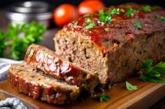

Bolo de carne

Ingredientes
- 1 xícara (chá) de água ou caldo de legumes
- 500 g de carne moída
- 1 cebola picadinha
- 3 dentes de alho picadinho
- 1 xícara (chá) de farinha de aveia
- Sal QB
Modo de preparo
- Misturar todos os ingredientes.
- Abrir a massa em uma fôrma untada.
- Assar a 180º C por aproximadamente 40 minutos.
Observações
- Pode-se rechear (queijo, fiambre, azeitona...) e assar como um rocambole.
- Pode-se cobrir com molho de tomate depois de pronto.
- Pode ser congelado por até 3 meses.